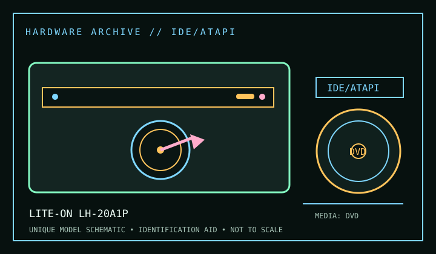

[ DVD WRITERS // IDENTIFIED MODEL ]
Lite-On LH-20A1P
DVD±R/RW, DVD±R DL and CD-R/RW write; DVD/CD read. Ratings below are model-specific; suffix, firmware and media can change compatibility.

IDENTIFICATION: Compare full model, suffix, OEM part number and firmware with the cited manual before installing, servicing, or using the drive for preservation reads.
Documented specifications
| Catalog subcategory | DVD writers |
|---|---|
| Exact model | Lite-On LH-20A1P |
| Read/write formats | DVD±R/RW, DVD±R DL and CD-R/RW write; DVD/CD read |
| Rated speeds | DVD±R up to 20×; DVD-R DL up to 8×; CD-R up to 48×. Maximums are media- and mode-dependent; sustained rate is not guaranteed. |
| Interface / mechanics | Internal 5.25-inch PATA/IDE. Consult the named service/product manual for mounting drawings; dimensions are not repeated where the cited model literature does not establish them. |
| Host / software compatibility | ATAPI IDE and compatible authoring software required; firmware revision affects media/speed. |
| Model distinctions | “P” is PATA; LH-20A1S is a different SATA SKU. |
Use, compatibility & preservation
- ATAPI IDE and compatible authoring software required; firmware revision affects media/speed.
- “P” is PATA; LH-20A1S is a different SATA SKU.
- For imaging, record exact drive/firmware, interface controller, host OS, application version, disc format and any read or verification errors; retain checksummed image copies and logs.
- Handle discs by edge or center hole; keep them in cases in a cool, dry location away from direct sunlight. Avoid adhesive labels, abrasives and undocumented polishing/solvents.
Read support is not write support. Verify the full unit label against the manual and measure the actual bay/caddy when a fit drawing is not available.
Sources
- Lite-On Lite-On LH-20A1P product manual / specificationsManufacturer support/product documentation locator for the exact named model. Match manual revision and product suffix to the label before applying a specification.
- DVD Forum — DVD format specificationsApplicable format/standards reference; it describes the disc format, not a guarantee that every drive revision implements it.
- Library of Congress — CD-R and DVD-R/RW longevityPreservation guidance for recordable optical media, not drive product specifications.